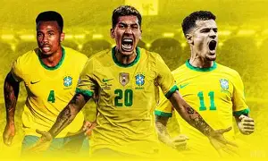
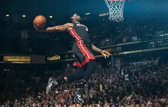
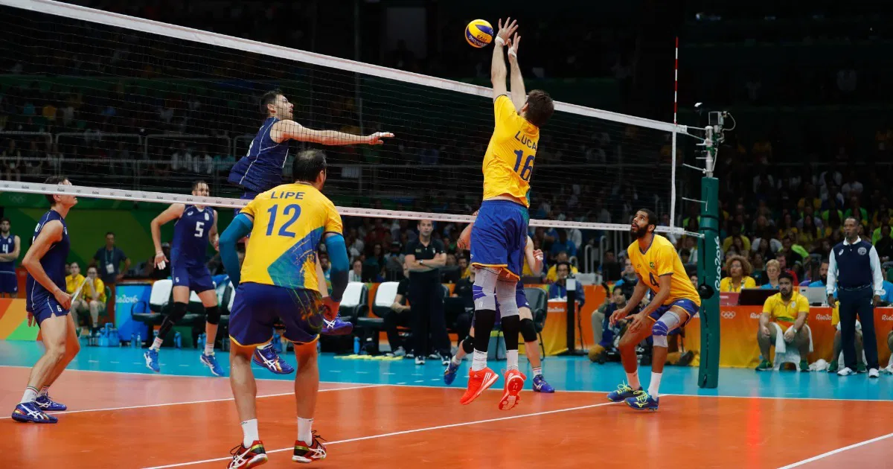

Copa do Mundo

A Copa do Mundo é o principal torneio de futebol do planeta. O Brasil é a seleção com mais títulos mundiais, possuindo cinco conquistas.
Futebol
O futebol é o esporte mais popular do mundo e movimenta milhões de torcedores todos os anos.

Clubes brasileiros disputam importantes competições nacionais e internacionais durante toda a temporada.
Basquete

O basquete cresce cada vez mais no Brasil. A NBA continua sendo a principal liga da modalidade.
Vôlei

O vôlei brasileiro possui tradição mundial e já conquistou diversas medalhas olímpicas.
Atletismo
O atletismo reúne provas de corrida, salto e arremesso, sendo uma das modalidades mais antigas dos Jogos Olímpicos.
Curiosidades
Brasil possui 5 Copas do Mundo.
Basquete foi criado em 1891.
Vôlei surgiu em 1895.
Atletismo é um dos esportes olímpicos mais tradicionais.